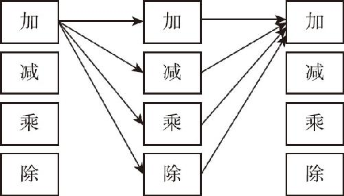
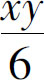
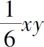

我们重新认识加减乘除的目的是为了算式子，那么什么叫作式子呢？式子就是一堆字母和加减乘除的组合，算式子就是一个加减乘除的式子再通过加减乘除的算法，跟另一个加减乘除的式子去合并化简．是不是觉得有点乱？其实一点都不乱，2x ＋3x ＝5x ，这是在干什么呢？前面的2x 是不是就是2乘以x ，后面的3x 是不是3乘以x 呢？把它们两个加起来，是不是一个乘法算式加上了另一个乘法算式呢？加完以后，再利用乘法分配律，把2和3加起来，x 还放在那里不动，不就得到了5x 吗？这就叫一个加减乘除的算式，通过加减乘除的算法，跟另一个加减乘除的算式合并化简．那么，算式之间怎么化简合并呢？我们要给这些算式先分一下类，根据不同的分类采用不同的方式处理．在代数的知识架构里面我们提到过，如果是由加减法组成的算式，就叫作多项式；如果是由乘法组成的算式，就叫作因式；如果是由除法组成，那就是分式．现在，请尝试按照以下思路展开你的想象：
如图8－1所示，如果我们把加减乘除从上到下一字排开，然后从左到右地复制成3列，就展开了代数算式的一张网，再把这个4行3列的加减乘除阵列，从左往右开始连接起来．你就会发现，第一行是加加加．三个加号的含义是，如果一个加法算式加上另一个加法算式，应该怎么计算？如果我们把前后两个加号用减号连接起来，就是两个加法算式相减又该如何计算？同样，还有相乘相除怎么计算？通过上面分析可以看到，一个加法算式和另一个加法算式有加减乘除四种计算方式，同样加法算式还要和减法算式计算，还要和乘除法算式计算．如果我们把所有的连接都连起来，会有多少种算式？4×4×4，一共有64种算式，这就是初中代数要学的绝大部分内容，这张知识的网就是代数算式的知识架构．

图8－1
架构搭好后先看一下整式里面最简单的单项式．什么叫单项式？单项式就是由一个数字跟几个字母相乘得到的算式，比如3x 、2x y 、4x 2 ，这里面只有乘的关系，没有加减法也没有除法运算．单项式很简单，是我们首先接触的代数算式．我们学习单项式，首先是要把一些最基本的概念搞清楚，单项式虽然简单，但里面仍然涉及好几个数字：
首先，代数式最前面出现的数字，叫作变量的系数，比如3x 的系数就是3，2x y 的系数就是2．
其次，代数式里的字母数量的总和，叫作变量的次数，比如3x ，因为出现了一个字母，而且出现了一次，所以它的次数是1．再比如在2x y 中，x y 两个字母分别出现了一次，所以是个二次式，而4x 2 ，虽然这里边只有一个字母x ，但是x 2 表示x 乘以x ，x 作为乘数出现了两次，所以它也是二次式．
然后我们还需要解释一下x 2 右上角的2，这个2表示的是x 的2次方，因为它出现在右上角，而且个头还很小，像一个竖着的小手指，所以它就叫作指数．其实，凡是有字母出现的地方，就有指数．只不过如果指数是1，我们就默认不写了，比如3x 吧，我们可以认为是3乘以x 的1次方．2x y 呢，我们可以认为是2乘以x 的1次方再乘以y 的1次方．那么这个指数跟次数有什么关系呢？很简单，根据前面的描述可以知道，代数式的次数等于所有指数的和．
最后，毕竟这个3x y 和4x 2 是不同的，虽然它们都是二次式，但前面的算式有两个变量，后面只有一个变量，这个变量的个数，叫作元数，所以这个3x y 是个二元二次式，而4x 2 就是一元二次式．
以上我们介绍了系数、次数、指数、元数，接下来，再介绍几条“潜规则”：
第一，数字与字母或字母与字母之间的乘号是可以省略的，比如2×x ，我们就写作2x ；
第二，数字要写在字母的前头，比如x ×2，我们应该写成2x ；
第三，如果系数是1或者－1，也就是1×x 或者－1×x ，1可以忽略不写，那就可以直接写成x 或者－x ；
第四，指数是1的时候，也可以忽略不写；
第五，如果这个单项式里有除法，而这个除数是一个数字，通常我们把它看作一个系数是分数的单项式．比如

，我们就把它当作
来看待，而不是把它当作一个分式．关于单项式的基本知识就是这些，接下来是不是该学一学单项式的加减乘除了呢？其实这些知识我们早就在用了，比如2x ＋3x ＝5x ，就是单项式的加法，7y －4y ＝3y 就是单项式的减法．同时还知道，x ×y ，可以写成x y ，而单项式相除可能会得到一个分式，这个我们后续再讨论．单项式自身的计算就这么简单，相对而言，更需要知道的是，哪些事儿是不能干的！这才是学习最重要的东西．
比如这个加法，3x ＋5x ＝8x ，那3x ＋5y 是不是等于8x y ？不成！为什么？因为在这个单项式里，必须得后面的字母完全一样它才能相加．这是加法的基本规律，反复强调过了，总不能让3只老鼠加上5只猫吧？3x ＋5x 2 是不是等于8x 2 ？也不成，为什么？因为x 和x 2 ，虽然是一类东西，但是单位不一样，这相当于用1米加上1平方米，用长度加面积，仍然是不可以的，本质上它们还是不同的事物．总结一下，就是在单项式的加减法中，只有变量和次数都相同的才能进行合并，其结果是系数相加减，变量和次数保持不变．
和加减法相比，单项式的乘法规则就简单多了．因为单项式本身就是一个数字和几个字母的乘积，再把两个单项式乘起来，就相当于一堆东西连着相乘，这就要用到乘法结合律了！可以把这一堆相乘的字母数字整理一下，把数字放在前头，把一样的字母数数几个，把它这个相乘的次数写在右上角，结果就出来了．比如2x 2 y ×3y z ，先看数字部分：2×3＝6；再看字母有几个，x 、y 、z 三个字母，那就直接都写下来：6x y z ；再数数每个字母分别乘了几次，x 有2次，y 有2次，z 有1次，所以结果就是6x 2 y 2 z ．